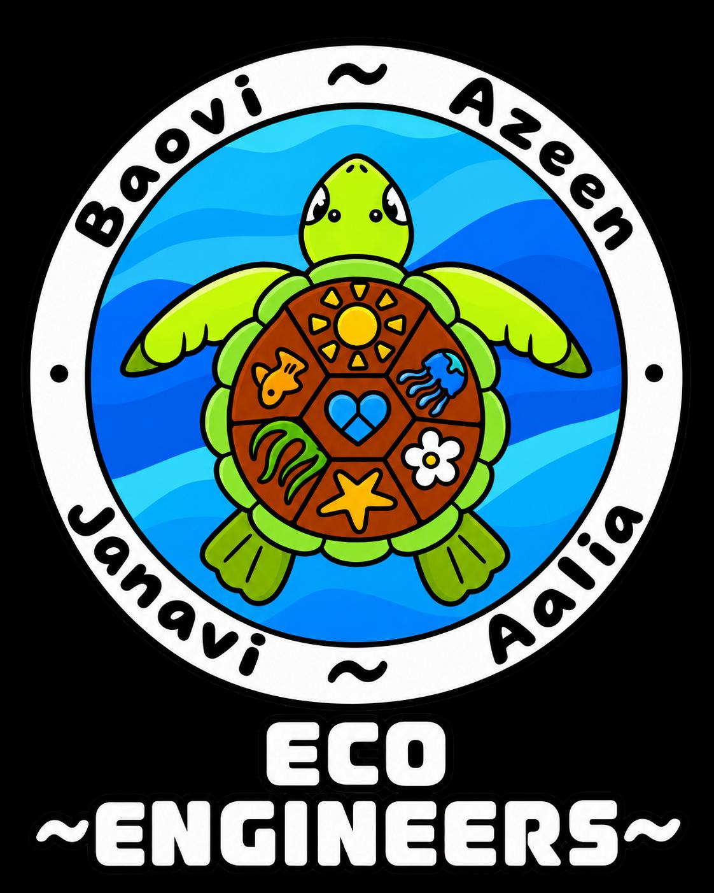
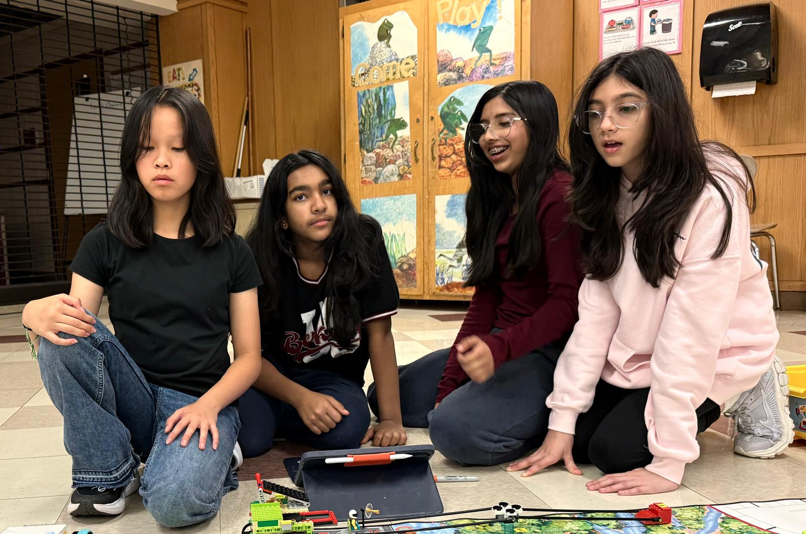

Project Overview
Our system uses a LEGO SPIKE Essential color sensor to identify colors associated with water quality testing and environmental monitoring.
Sensor data is processed in real time, stored in Firebase, and displayed through this live dashboard.
The project demonstrates how robotics, cloud computing, and environmental science can work together to protect aquatic ecosystems.

--
LIVE SENSOR ONLINE